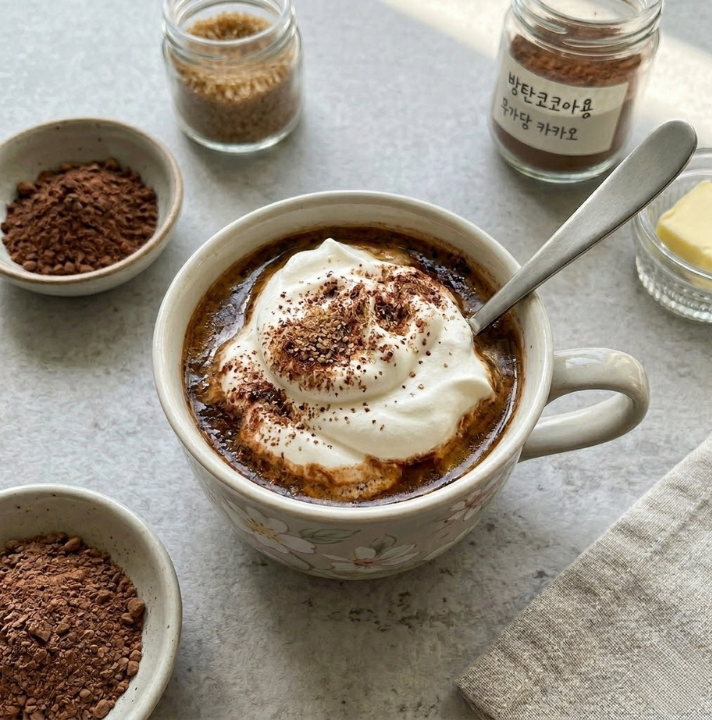
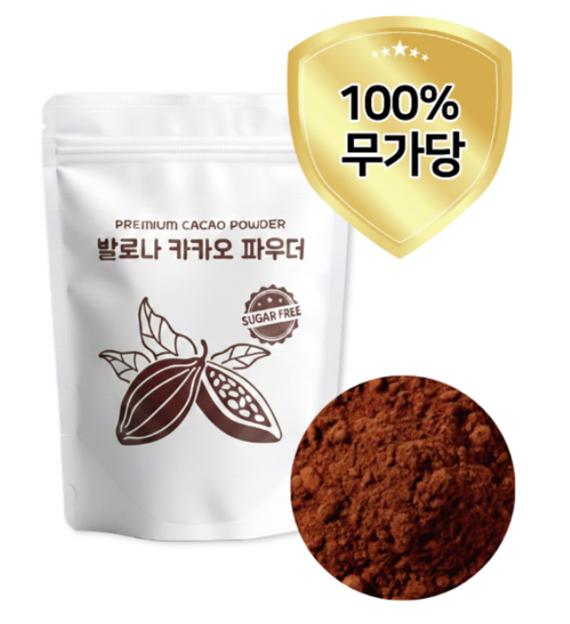
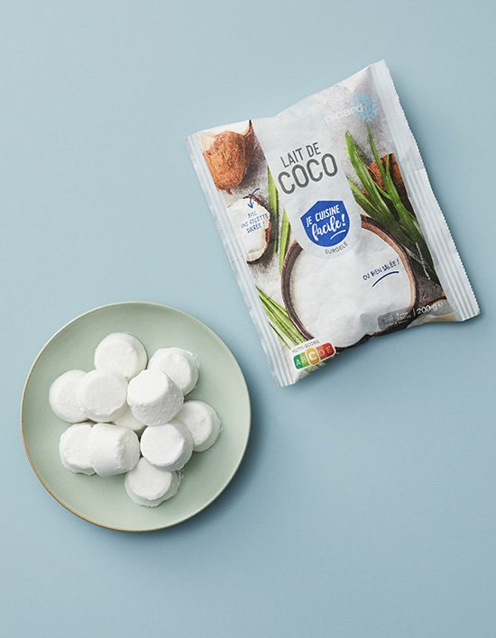
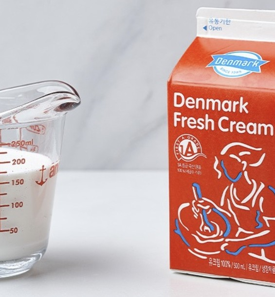
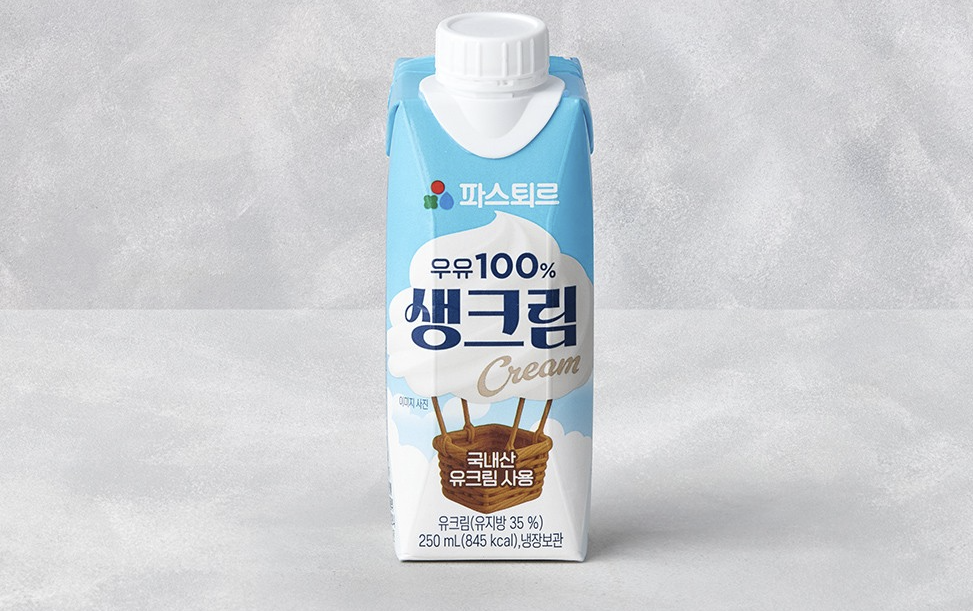

🍫 발로나 코코아 파우더
다영's Pick : 발로나는 파티시에들이 신뢰하는 프랑스 최고급 초콜릿 브랜드예요. 방탄코코아에 넣으면 카카오의 깊고 묵직한 향이 확 달라요. 싼 코코아와 비교가 안 돼요.

🧈 무염 목초버터 : 프레지덩트
다영's Pick : 목초 소의 우유 버터라 오메가-3·CLA가 일반 버터보다 높아 지방의 질이 달라요. 깔끔하고 담백해서 방탄코코아 처음 시작하는 분께 권해요.

🧈 무염 목초버터 : 이즈니
다영's Pick : 프랑스 노르망디 AOC 인증 버터라 유지방이 높고, 방탄코코아에 넣으면 초콜릿 버터 향이 진하게 살아요. 한 번 써보면 못 돌아간다는 분들도 있어요.

🫙 기버터 (Ghee)
다영's Pick : 유당과 단백질을 완전히 제거한 순수 지방이라 유제품 민감한 분도 방탄코코아에 부담 없이 쓸 수 있어요. 발연점이 높아 야채·고기 볶을 때도 즐겨 써요.

💧 MCT 오일 : 마이노멀
다영's Pick : MCT 오일의 핵심 C8(카프릴산)은 간에서 가장 빠르게 케톤으로 전환되는 지방산이에요. 마이노멀은 C8·C10 중심이라 방탄코코아 목적에 딱 맞아요.

💧 MCT 오일 : 포켓용
다영's Pick : 여행이나 외식할 때 간편하게 들고 다니기 좋아요. 작은 가방에도 쏙 들어가고, 뜯어서 바로 넣으면 돼서 어디서든 키토제닉 라이프를 이어갈 수 있어요.

🥥 코코넛 밀크 큐브
다영's Pick : 시청자분들이 가장 많이 여쭤보신 재료예요. 일반 캔은 빨리 상해 늘 아쉬웠는데, 큐브는 필요한 만큼만 꺼내 쓰면 돼요. 한 개에 20g, 첨가물도 없어요.

🍬 알룰로스
다영's Pick : 혈당 스파이크 없이 단맛을 낼 수 있는 천연 감미료예요. 실질 칼로리가 낮고, 방탄코코아에 넣어도 잘 녹아요. 스테비아보다 뒷맛이 훨씬 깔끔해요.

🧂 히말라야 소금
다영's Pick : 방탄코코아에 한 꼬집 넣으면 맛이 훨씬 부드럽고 풍미가 깊어져요. 천연 미네랄이 풍부한 히말라야 핑크소금을 그라인더로 매번 신선하게 갈아 써요.

🥛 콜라겐 파우더 (Bulletproof)
다영's Pick : 데이브 아스프리가 매일 10g씩 챙기는 이유는 열에 강해 뜨거운 코코아에 타도 성분이 파괴되지 않아서예요. 폐경 후 골밀도 증가 연구도 있어요.
쿠팡 바로가기 →
🥛 동원 덴마크 생크림
다영's Pick : 진하고 고소한 생크림이에요. 방탄코코아에 넣으면 라떼 느낌이 확 살아나요. 성분이 생크림 하나라 첨가물 없이 원칙에 딱 맞아요.
마켓컬리 바로가기 →
🥛 파스퇴르 생크림
다영's Pick : 저온 살균(HTST) 방식으로 만든 생크림이에요. 동원보다 덜 진하고 담백한 라떼 느낌이라 가볍게 마시고 싶을 때 선택해요. 신선한 풍미가 살아있어요.
마켓컬리 바로가기 →